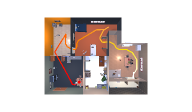
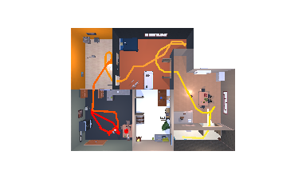
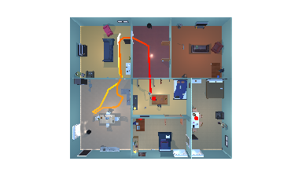
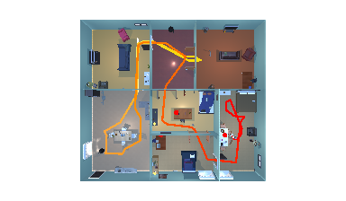
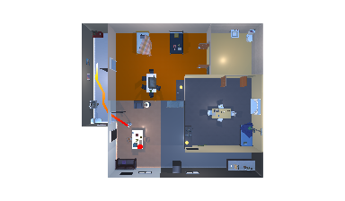
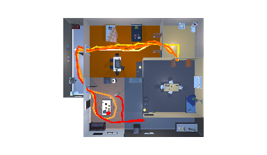
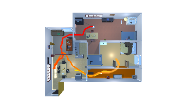
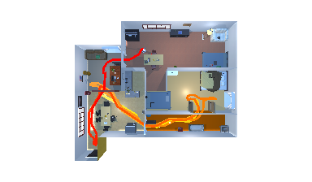

Existing robotic foundation policies are trained primarily via large-scale imitation learning. While such models demonstrate strong capabilities, they often struggle with long-horizon tasks due to distribution shift and error accumulation. While reinforcement learning (RL) can finetune these models, it cannot work well across diverse tasks without manual reward engineering. We propose VLLR, a dense reward framework combining (1) an extrinsic reward from Large Language Models (LLMs) and Vision-Language Models (VLMs) for task progress recognition, and (2) an instrinsic reward based on policy self-certainty. VLLR uses LLMs to decompose tasks into verifiable subtasks and then VLMs to estimate progress to initialize the value function for a brief warm-up phase, avoiding prohibitive inference cost during full training; and self-certainty provides per-step intrinsic guidance throughout PPO finetuning. Ablation studies reveal complementary benefits: VLM-based value initialization primarily improves task completion efficiency, while self-certainty primarily enhances success rates, particularly on out-of-distribution tasks. On the CHORES benchmark covering mobile manipulation and navigation, VLLR achieves up to 56% absolute success rate gains over the pretrained policy, up to $5\%$ gains over state-of-the-art RL finetuning methods on in-distribution tasks, and up to 10% gains on out-of-distribution tasks, all without manual reward engineering.
We show the dense reward formulation and representative long-horizon task behaviors in the following video.
These videos show additional VLM-based task progress estimation process used during reward construction and value initialization.
VLM analysis example 1
VLM analysis example 2
VLM analysis example 3
VLM analysis example 4
Each case compares ours and the baseline side by side. Cases 1 and 2 are in-distribution tasks, while Cases 3 and 4 are out-of-distribution (OOD) tasks.







